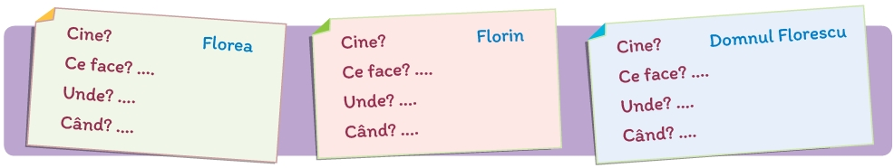

În textele literare, hanul apare ca un loc în care oamenii se odihnesc după ce au parcurs distanțe mari, se înveselesc și povestesc întâmplări la care au participat sau au fost martori. Prezintă colegilor, în 3-4 enunțuri, părerea ta despre semnificația hanului în textul citit, alegând una dintre variantele:
Cadrul temporal al acțiunii poate fi conturat indirect. În primul fragment este folosit cuvântul zlot, a cărui explicație o găsești în subsolul paginii cu textul, iar în al doilea, denumirea jocului Duke, lansat în anul 1996. Continuă seria cu încă cinci cuvinte ilustrative pentru cadrul temporal sugerat de cele două imagini.
Recitește, din al doilea fragment al textului, descrierea jocului Duke. Explică rolul descrierii în narațiune, alegând dintre variantele:
Completează, într-un mod asemănător, informațiile corespunzătoare fiecărui fragment din text.
Imaginează-ți că ești unul dintre personajele textului, Florea sau Florin. Creează o hartă a spațiului în care trăiești. Notează, pe hartă, denumirile a cel puțin cinci repere spațiale.
Lucrați în pereche! Observați ordinea cronologică a întâmplărilor de la exercițiul 1 și propuneți o altă derulare logică a acelorași evenimente. Motivați-vă alegerea.
Scrie un text, de cel puțin 150 de cuvinte, în care să prezinți o întâmplare al cărei erou este Florea haiducul. În textul creat de tine:
13